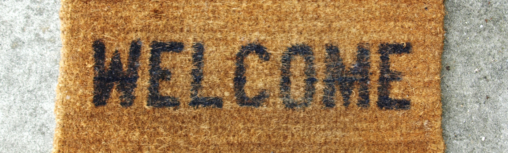

Blog of Ania Hughes
Preparing to be a mother
It is becoming more common for expectant parents to attend some form of antenatal education classes to prepare for the birth of their babies. This is the first step to becoming a mother (or father) by putting the needs of the new member of your family first. Also it is often to alleviate fears a mother may have surrounding labour or to help couples become more informed regarding their choices on their birthing day. As a HypnoBirthing practitioner I often help couples like this prepare.
But I would also compare this to putting all your energy into planning your wedding day without much thought as to the marriage itself. Many mothers often get a feeling of "What am I supposed to do now?" once the initial days are behind them and the last visitors have left.
So how can you prepare to be a mother? Once antenatal classes are done and dusted and preparations for labour are complete I'd suggest just taking some time to think about some postnatal practicalities.
Self-Care - This is top of the list as it is very important and often brushed aside as a necessary sacrifice. With limited time think what you'd like to prioritise to feel like yourself. Some people need a shower while others can get by on a good toothbrush and face wash or maybe the time to drink a coffee. Write down two or three which are your "must do" and either discuss it with your other half or simply put them somewhere you (and anyone helping) can see them and MAKE the time to do them. This may well mean you'll end up showering with your baby but it means you have time to feel human.
The House - most people know with a new little person the house is not your biggest priority. However there are things that will need to get done from a practical point of view. Food needs to be bought, cooked (or re-heated!), laundry needs to be done. So make a plan - perhaps set up an online food delivery. Sites like mysupermarket have quick shopping list sections. This means you only need to write what you need in once and you can then go and order your shop quickly and have it delivered to your door. Another idea could be to cook extra meals before your new arrival and freeze meals ahead. If you have the income consider a cleaner, if not consider asking friends or family to help out or simply plan which jobs are essential and what can be left for the time being.

Visitors - This is a personal preference. Some new parents love the privacy of a babymoon and want to keep visitors away. Others can't wait to share their new addition with the world. It is important parents discuss their wishes ahead of time and share it with friends and family. In the case of the babymoon couple it prevents offence from those relatives dying to bestow gifts. Those parents who welcome visitors need to set clear expectations for their visitors. If visitors do come it is important they know not to stay too long (or with you), ask them to help with some house jobs (from a pre-prepared list on the fridge perhaps) and be clear you are not their to be a "host".
When you feel you are ready for your birth and the postnatal practical change in lifestyle it is time to take the next step.
Now it's time to prepare your heart for your baby.
Learning how to love your baby

Many songs, films and poems exist about love. We have all known love of some description whether it be from our own family, our partner, friends or a pet. Yet despite this it turns out a mothers love is completely different. I have heard it described in a huge variety of terms varying from all-consuming and terrifying to life-changing and awe inspiring. But how do mothers love?
At the point of birth many women love to exclaim their "instant love" for their babies. While others find it is not so simple. There is no right way to love your baby, there is just your way.
Think back to before your first meeting with the father of your child. If someone had said "This man is it. He is your moon and stars and will father your children", would you have loved him at first sight? Very few people would. It is no different with a baby. They are a new person. Baby needs to get to know you and you need to get to know them. Many mothers describe an overwhelming urge to protect their newborn but not necessarily label that as love (although you could argue that is the beginnings of love).

The important point to stress is that love is not static - it grows and changes. The relationship and love you have with your parents and partner evolves and develops, the same is true with your baby. Love will grow.
The difficulty with this new relationship for many new mums is the mismatch in need and communication. A mother will need to learn about how to care for her baby while her baby has yet to figure out that they are even a person. A baby can only communicate what it needs in a simple way - non verbally. A language we are no longer fluent in - it means as mothers we are watching these new small beings and trying to read these cues. It is not an easy task and takes a lot of mental effort (for an already tired mum) as well as a lot of trial and error. But you know what? Even if you feel all you do is attend to their needs you are showing your baby they are loved, cared for and safe. This is the first step.
If you want to enhance and deepen the love for your baby here are some activities may help:
- Take time to admire - Choose one thing about your baby that you can admire. This could be watching them while they sleep, admiring their small toes or watching their face as you sing them a lullaby. Doing one of these a day you'll soon find you have a whole catalogue of things to love.
- Do something together - This does not need to be anything elaborate just a time to be with each other. Feeding the ducks is a great example of a few moments of being together. Perhaps sitting in the garden or park watching the world go by. Your activity doesn't matter, making the time shows your baby they are loved and important.
- Be kind to yourself - Life is not a movie. Love takes time and it will come. Remember through choosing to care for their needs you already love them.

The term a motherly love often puts images into peoples heads of their own mothers or aspirations of what they should be feeling according to what others have told them. The problem of holding yourself up to an ideal is that it is impossible to achieve. When you learn to let go of a pre-conceived notion of what love should be and sit down with your baby only then can you discover what it really is.